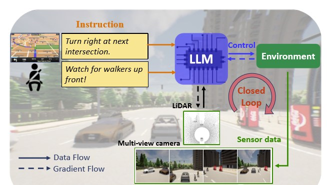
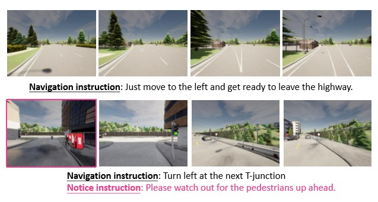
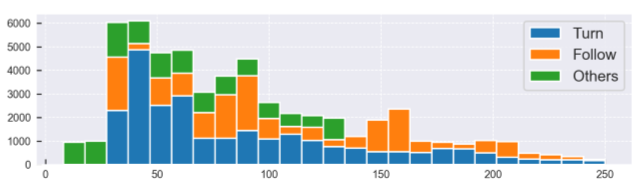
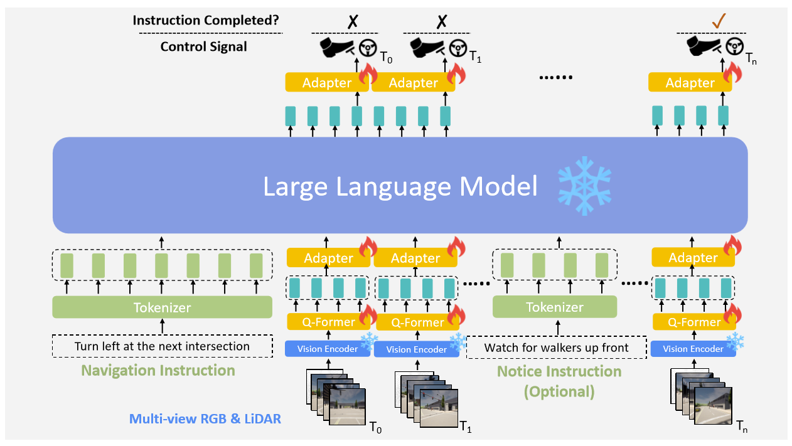
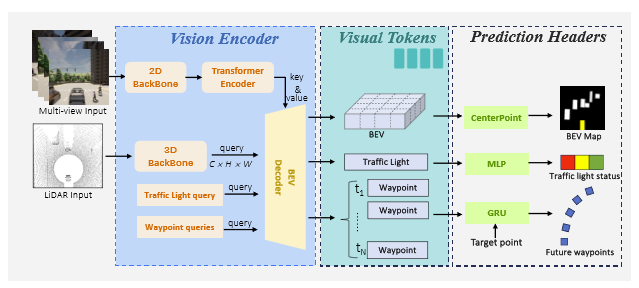
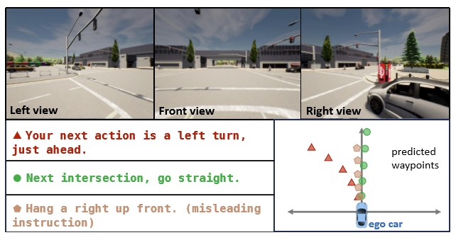
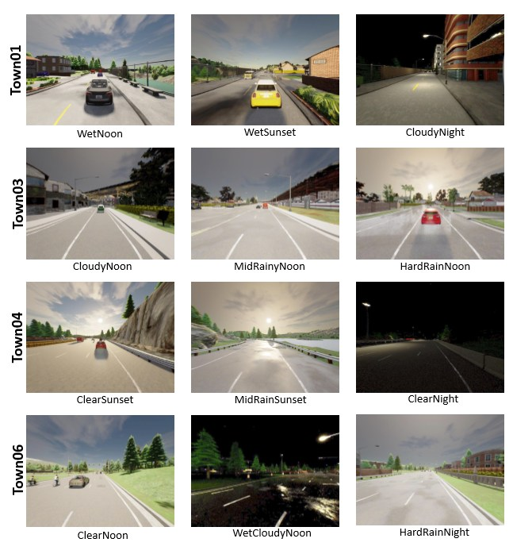
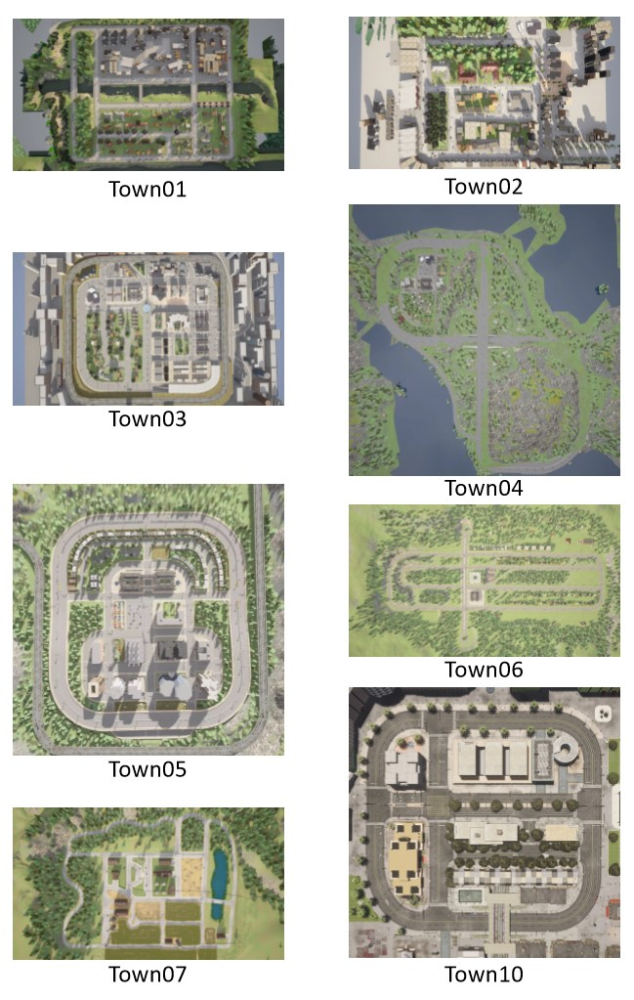

目次
LMDrive: Closed-Loop End-to-End Driving with Large Language Models
Hao Shao1,2、Yuxuan Hu3、Letian Wang4、Steven L. Waslander4、Yu Liu2,5（責任著者）、Hongsheng Li1,3,5（責任著者）
1CUHK MMLab、2SenseTime Research、3CPII under InnoHK、4University of Toronto、5Shanghai Artificial Intelligence Laboratory
arXiv:2312.07488v2 [cs.CV]、2023年12月21日
翻訳について：原文 PDF は
50_LMDrive_2312.07488.pdf（全 14 ページ）。本文、図の説明、図中ラベル、表、脚注、付録を訳出し、論文タイトルと参考文献は原文のまま掲載。図は原図を掲載し、英語ラベルの日本語訳を併記した。数式・数値・引用番号・コードの識別子は原文を維持。原文の記述に関する補足は「訳注」と明示し、本文と区別している。
要旨
自動運転の分野では近年著しい進歩が見られるものの、現代の手法は、ロングテールな予期せぬ事象や困難な都市シナリオに遭遇すると依然として苦戦し、深刻な事故を起こすことさえある。一方で、大規模言語モデル（LLM）は「汎用人工知能（Artificial General Intelligence）」に迫る印象的な推論能力を示している。他方で、従来の自動運転手法は限られた形式の入力（例：センサデータやナビゲーション用ウェイポイント）に依存する傾向があり、車両が言語情報を理解し人間と対話する能力を制限している。そこで本論文では、新しい言語誘導型・エンドツーエンド・クローズドループの自動運転フレームワークである LMDrive を提案する。LMDrive は、マルチモーダルなセンサデータと自然言語の指示を独自の方法で処理・統合し、現実的な指示設定のもとで人間やナビゲーションソフトウェアとの対話を可能にする。言語に基づくクローズドループ自動運転のさらなる研究を促進するため、約 64K の指示追従データクリップを含む対応データセットと、複雑な指示や困難な運転シナリオに対処するシステムの能力を検証する LangAuto ベンチマークも公開する。LMDrive の有効性を示すために、広範なクローズドループ実験を行う。我々の知る限り、本研究は LLM をクローズドループのエンドツーエンド自動運転に活用した初めての研究である。コードは我々のウェブページで公開している。

図1：我々は、初の言語誘導型クローズドループ・エンドツーエンド運転フレームワークである LMDrive を提案する。LMDrive は言語指示とマルチモーダル・マルチビューのセンサデータを入力として受け取り、複雑なシナリオで走行するための制御信号をリアルタイムに出力する。
図中ラベル：Instruction＝指示、Turn right at next intersection.＝次の交差点を右折せよ。、Watch for walkers up front!＝前方の歩行者に注意！、Control＝制御、Environment＝環境、Closed Loop＝クローズドループ、Sensor data＝センサデータ、Multi-view camera＝マルチビューカメラ、Data Flow＝データの流れ、Gradient Flow＝勾配の流れ
1 はじめに
近年、公道に配備される商用自動運転車（AV）の数が増加し、自動運転は目覚ましい進歩を遂げている。一般に、最先端の自動運転システムは 2 つの主要なアプローチに分類できる。1）システムを知覚・予測・計画といった複数のサブモジュールに分解し、それらを統合するための固定的なインタフェースを設計するモジュール型アプローチ［2, 23］、2）ニューラルネットワークによってセンサデータを制御信号へ直接変換するエンドツーエンド型アプローチ［16, 35］である。これらのアプローチはいずれも広く採用され、困難なベンチマークで絶えずブレークスルーを達成しているが、両者とも、センサデータ、目標ウェイポイント、行動コマンドといった固定形式の入力のみに依存しているという制約を共有しており、そのためエージェントがマルチモーダルな情報を理解し、人間や環境と対話する能力が制限されている。他方で、大規模言語モデル（LLM）は「汎用人工知能」に迫る印象的な範囲の能力を示している。これには言語理解、知識検索、推論が含まれる。こうした能力は、自律エージェントの安全性、制御性、説明可能性を大きく高めうる。本研究では、次の問いに初めて答えることを目指す。人間の乗員やナビゲーションソフトウェアと自然言語だけで対話できる、認知的な自動運転システムを LLM の上に構築できるだろうか？
脚注：（封筒記号）責任著者。
自律システムに自然言語を理解させることは、複雑なシナリオにおける高度な推論や人間との効率的な対話に大きな可能性をもたらし、これまで自明ではなかった多くの問題に対処できるようにする。いくつか例を挙げる。1）現代の AV システムが通常苦戦する［41］、あるいは深刻な事故を起こすことさえある［37］ロングテールな予期せぬ事象や困難な都市状況（例：複雑で混雑した交差点）において、言語を理解する AV は、乗員やナビゲーションソフトウェアからのナビゲーション指示に従うことで容易に切り抜けられる。2）AV は乗員からの突然の注意喚起（例：知覚システムが見逃しやすい小さな物体）に自然言語だけで適応できる。これは従来は自明ではなく（訳注：原文は "non-trial" だが "non-trivial" の誤植と解して訳した）、大量の手作りルールを必要としていた。
こうした魅力的な性質を目指し、多くの先駆的研究が、オープンループ設定において AV システムの推論能力、解釈可能性、全体的な性能を高めるために大規模言語モデルを用いる可能性を探ってきた。最も一般的な戦略の一つ［6, 11, 28, 32］は、1）まず LLM を用いてシーン知覚結果とナビゲーションコマンドをテキスト記述に変換し、2）これらのテキスト記述を LLM に入力してテキストによる運転判断を生成し、3）テキストによる運転判断を実行可能な制御コマンドに変換するというものである。良好な予備的結果が示されてはいるが、異なる LLM がサブタスクを個別に担うこの種のアプローチは、エンドツーエンドに学習することが難しく、大量のデータに応じてスケールする能力を失い、知覚の誤りや不確実性に対して頑健でない。例えば、後半 2 段階の LLM はセンサデータにアクセスできないため、第 1 段階での不正確な検出や検出漏れが後段で大きな累積誤差につながりうる。これらの問題に対処するため、エンドツーエンドの言語ベース運転手法［46］が提案されている。しかし、これらの手法はすべてオープンループ設定で学習・評価されており、そこでは行動が生成されてエキスパートの行動と照らして評価されるが、実際の環境では実行されない。特に、「右折せよ」のようなナビゲーション指示を実行する際、AV エージェントは一連の行動を生成するだけでなく、その行動が環境にもたらす変化も考慮しなければならない。クローズドループ評価が欠如していると、累積誤差、人間とロボットの相互作用、行動の時間的一貫性といった重要な問題が十分に考慮されず、その結果得られる手法は短い時間範囲を超えてスケールすることが難しく、実際のシステムでは効果を発揮できない。我々の知る限り、LLM をクローズドループのエンドツーエンド自動運転に活用した既存の論文は存在しない。
本研究では、エンドツーエンドのクローズドループ自動運転のための、指示追従型マルチモーダル LLM モデルである LMDrive を提案する。提案モデルは、カメラ・LiDAR のセンサデータを処理し、自然言語による運転指示を理解し、車両の制御信号を直接生成することができる。推論能力を維持するため、事前学習済みの LLM モデルを採用し、凍結したまま用いる。LLM を自動運転に適応させるため、複数のカメラ・LiDAR データエンコーダと、学習可能な入出力アダプタを統合する。また、マルチモーダル視覚エンコーダのために、運転タスク向けに特別に設計された事前学習戦略も導入する。クローズドループ設定での LMDrive の学習を可能にするため、動的な世界と現実的で困難なシナリオをシミュレートする CARLA シミュレータ［12］に基づいて、言語誘導型の運転データセットを構築する。指示が人間やナビゲーションソフトウェアから来る可能性のある現実的な会話シナリオにおいて運転モデルの能力をよりよく検証するため、我々は 1）ナビゲーション指示と注意指示の両方を考慮し、2）LLM に対するプロンプトエンジニアリングによって指示を多様な言い回しに変化させ、3）安全上の懸念や交通規則のために実行不可能な、誤誘導的で不合理な指示を取り入れ、4）「ここで左に曲がって、次の交差点でもう一度左へ」のように、ナビゲーション指示を複数の連続したセグメントを含むものへと拡張する。さらに、再現性のために対応する LangAuto 評価ベンチマークと事前学習済みの LMDrive モデルを提供し、これらがエンドツーエンドのクローズドループ言語ベース自動運転におけるさらなる研究を促進することを期待する。
まとめると、本論文の貢献は以下のとおりである。
- マルチモーダル・マルチビューのセンサデータと自然言語指示を介して動的環境と対話する、新しいエンドツーエンド・クローズドループの言語ベース自動運転フレームワーク LMDrive を提案する。
- 約 64K のデータクリップからなるデータセットを提供する。各クリップには、1 つのナビゲーション指示、いくつかの注意指示、マルチモーダル・マルチビューのセンサデータ系列、および制御信号が含まれる。クリップの長さは 2 秒から 20 秒である。
- 言語指示をナビゲーション入力として受け取る自律エージェントを評価するためのベンチマーク LangAuto を提示する。これには誤誘導的な指示や長い指示、困難な敵対的運転シナリオが含まれる。
- 提案フレームワークの有効性を示すために広範なクローズドループ実験を行い、LMDrive のさまざまな構成要素を分析して、この方向での今後の研究に知見を提供する。
2 関連研究
2.1 エンドツーエンド自動運転
近年、エンドツーエンド自動運転の分野では多くの進歩［7, 8］が達成されている。UniAD［16］は、フルスタックの運転タスクを組み込み、クエリで統一されたインタフェースを用いて異なるタスク間で情報をやり取りするフレームワークを考案した。ThinkTwice［20］は、重要な領域から情報を取得する Look モジュールを設計し、その特徴を用いて粗い予測を洗練した。ReasonNet［35］は、運転シーンの時間的・大域的な情報を活用して知覚性能を向上させ、オクルージョン検出に役立てた。InterFuser［34］は、マルチモーダル・マルチビューのセンサからの情報を完全に融合・処理して包括的なシーン理解を行う、Transformer ベースのフレームワークを提案した。TCP［45］は、新しいマルチステップ予測を導入することで、軌道計画と直接制御の 2 つのブランチを統合するアプローチを提案した。LAV［3］は、視点不変な表現を学習するためにいくつかの教師タスクを導入した。この表現は、学習時にはより豊富な教師信号を、推論時には複雑な推論のためのより多くの情報を提供できる。これまでに論じた模倣学習手法のほかに、強化学習の戦略を取り入れようとするアプローチもいくつか存在する。Latent DRL［38］は、教師ありの方法で学習して環境観測の潜在表現を得て、その表現を入力として強化学習を行う。Roach［48］は、環境情報への特権的アクセスを持つ強化学習エージェントを用い、最終的なエージェントとしてモデルを蒸留する。ASAPRL［44］と TaEcRL［50］は、抽象化されたスキルを活用し、効果的な探索と報酬伝達を促すことで、強化学習の効率と最終性能を効果的に向上させた。しかし、これらのエンドツーエンド手法は、人間（乗員）と音声やテキストで対話する能力を欠いており、通常、意思決定過程の説明可能性も低い。
2.2 運転タスクにおける LLM
ここ数か月で、大規模言語モデル（LLM）［10, 17, 19, 39, 40］の新たな進歩が見られている。さらに、視覚大規模言語モデル（VLLM）は視覚エンコーダを導入し、LLM がテキストデータだけでなく画像や他のモダリティのデータも解釈できる道を開いた［5, 25, 51］。自動運転（AD）の分野では、最近の研究が、より優れた説明可能性と人間との自然な対話のために LLM を AD システムに統合している。いくつかの研究は、マルチモーダルな入力データを扱い、運転シナリオに対するテキスト記述と制御信号を提供できる視覚言語モデルのアプローチを採用している。例えば、DRIVEGPT4［46］は、フレーム系列を入力として受け取り、人間の問いかけに対する応答を生成し、次のステップの制御信号を予測するマルチモーダル LLM フレームワークを提案した。しかし、このフレームワークには入力コマンドがないため、予測された制御は特定のナビゲーションコマンドに従うことができず、これはこのフレームワークを実際のシナリオに展開するのが難しいことを意味する。一方、より多くの研究者が、運転状況をテキスト記述に変換して LLM の入力とし、包括的な運転状況を直接解釈・推論することに注目している。この系統の研究では、GPT-Driver［28］が、異種のシーン入力を言語トークンに変換することで、動作計画を自然言語モデリングのタスクとして再定式化した。LanguageMPC［32］は、LLM を活用して複雑なシナリオを推論し、高レベルの運転判断を出力する。その後、この手法はパラメータ行列を調整して、その判断を低レベルの制御信号に変換する。LLM-Driver［6］は、数値ベクトルを入力モダリティとして用い、ベクトル化された物体レベルの 2D シーン表現を融合することで、LLM が現在の環境に基づいて質問に答えられるようにした。
しかし、この系統の研究は運転問題をオープンループ設定でのみ考えており、累積誤差、行動の時間的一貫性、エンドツーエンドの学習可能性といった、モデルを実際のクローズドループ運転タスクに持ち込むうえで重要な問題を無視していた。我々の知る限り、本研究はクローズドループ設定における初の言語ベース・エンドツーエンド自動運転手法である。コミュニティでのさらなる研究を促進するため、関連するデータセット、ベンチマーク、学習済みモデルもオープンソースとして公開する。

図2：収集したデータの 2 つの例と、それに対応してラベル付けされたナビゲーション指示および任意の注意指示。
図中ラベル：Navigation instruction: Just move to the left and get ready to leave the highway.＝ナビゲーション指示：左に寄って高速道路を降りる準備をしてください。、Navigation instruction: Turn left at the next T-junction＝ナビゲーション指示：次の T 字路で左折、Notice instruction: Please watch out for the pedestrians up ahead.＝注意指示：前方の歩行者に注意してください。

図3：解析済みクリップの、クリップ長と対応するナビゲーション指示の種類に関する分布。
図中ラベル：Turn＝旋回、Follow＝追従、Others＝その他。横軸はクリップ長、縦軸はクリップ数。
3 データセットの生成
我々は、3 つの入力源に基づいて運転行動を生成できる知的な運転エージェントの開発を目指す。1）センサデータ（マルチビューカメラと LiDAR）：エージェントが現在のシーンを認識しそれに従った行動を生成できるようにする。2）ナビゲーション指示（例：車線変更、旋回）：エージェントが自然言語による要求（人間またはナビゲーションソフトウェアからの指示）を満たすように運転できるようにする。3）人間の注意指示：エージェントが人間と対話し、人間の提案や好み（例：敵対的事象への注意、ロングテール事象への対処など）に適応できるようにする。本節では、エージェントの学習に必要なマルチモーダルデータセットの生成方法と、ナビゲーション指示および人間の注意指示のためのプロンプト設計について述べる。具体的には、現実的で動的なクローズドループの世界をシミュレートでき、エンドツーエンド自動運転の分野で広く採用されていることから、シミュレータとして CARLA［12］を選択する。データ収集は 2 段階からなる。1）エキスパートエージェントによるセンサデータと制御信号の収集、2）収集したデータの解析と指示によるラベル付けである。
| 種類 | 各指示タイプからランダムに選んだ 3 つの指示 |
|---|---|
| Follow（追従） | Maintain your current course until the upcoming intersection.（次の交差点まで現在の進路を維持してください。） In [x] meters, switch to left lane.（[x] メートル先で左車線に移ってください。） Ease on to the left and get set to join the highway.（ゆっくり左に寄って、高速道路に合流する準備をしてください。） |
| Turn（旋回） | After [x] meters, take a left.（[x] メートル先で左折してください。） At the next intersection, just keep heading straight, no turn.（次の交差点では曲がらずにそのまま直進してください。） You'll be turning left at the next T-junction, alright?（次の T 字路で左折しますね、いいですか？） |
| Others（その他） | Feel free to start driving.（どうぞ走行を開始してください。） Slow down now.（今すぐ減速してください。） Head to the point, next one's [x] meters ahead, [y] meters left/right.（次の地点、[x] メートル前方・[y] メートル左／右へ向かってください。） |
| Notice（注意） | Watch for walkers up front.（前方の歩行者に注意してください。） Just a heads up, there's a bike ahead.（念のため、前方に自転車がいます。） Please be aware of the red traffic signal directly in front of you.（すぐ前方の赤信号に注意してください。） |
表1：考慮したナビゲーション指示（追従、旋回、その他）と注意指示の例。\([x]\) と \([y]\) は特定の距離を表す浮動小数点数である。
センサデータと制御データの収集。ルールベースのエキスパートエージェント［34］を用いて、約 3M の運転フレームを含むデータセットを作成する。エキスパートエージェントは CARLA 内の特権情報にアクセスできるため、このデータセットには各フレームのカメラデータ、LiDAR データ、制御行動が含まれる。収集データセットの多様性を高めるため、エージェントを 2.5k のルート、8 つの町、21 種類の環境条件（例：天候、時間帯）で走行させる。4 台の RGB カメラ（左、前、右、後）と 1 台の LiDAR を用いる。側方カメラは 60° の角度で取り付けられている。さらに、遠方の信号機の状態を捉えるため、前方画像を中央で切り出したものを追加のフォーカスビュー画像として用いる。LiDAR は 64 チャンネルで、毎秒 600K 点を生成する。
解析と言語アノテーション。第 2 段階では、収集したデータをクリップに分割し、各クリップに適切なナビゲーション指示と任意の注意指示をラベル付けする。解析処理はフレーム系列を入力として受け取り、各クリップが 1 つのナビゲーション指示に対応するようにそれらのフレームをクリップに分割する。例えば、エージェントがフレーム \(T_0\) で左折を開始しフレーム \(T_n\) で終了した場合、（\(T_0\), \(T_n\)）を指示「Hang a left at the next crossroads（次の交差点で左に曲がって）」を伴う新しいクリップとしてラベル付けする。さらに、時刻 \(T_a\) に敵対的事象1が発生した場合、このクリップに注意指示を 1 つ追加し、緊急時に乗員や側方支援システムが運転者に伝達する現実のシナリオを模擬する。図2に示すように、各クリップにはセンサデータ、制御信号、対応するナビゲーション指示、および任意の注意指示が含まれる。解析済みクリップの、クリップ長と対応する指示に関する分布を図3に示す。我々のデータセットでは、64K の解析済みクリップと 464K の注意指示を収集した。
脚注1：敵対的事象には、悪い路面状況、前方車両の急ブレーキ、遮蔽された領域から道路へ飛び出してくる予期せぬ存在、赤信号を無視する車両などが含まれる。
指示の設計。3 種類のナビゲーション指示（追従、旋回、その他）と 1 種類の注意指示を考慮し、合計 56 種類の異なる指示からなる。表1にいくつかの例を示し、全リストは補足資料に掲載している。指示がナビゲーションソフトウェアや人間から来る現実的な指示設定でエージェントが運転できるよう、我々は以下を行う。
- 指示の多様化：自然言語が本来持つ豊かさを考慮し、各種類の指示について ChatGPT API を用いて 8 つの異なるバリエーションを生成した。それぞれ意味は同じであるが言い回しが異なる。これにより、同じ指示が伝えられうる多様な方法に対応し、言語解釈の網羅性と柔軟性が高まる。
- 誤誘導的な指示の取り込み：現実の場面では、ナビゲーションソフトウェアや乗員が、交通規則に違反したり安全上の懸念を生じさせたりする誤誘導的な指示を AV に与えることがある。例えば、片側 1 車線の道路で「Change to left lane（左車線に移れ）」という指示に従うのは危険である。誤誘導的な指示に対するモデルの頑健性を高めるため、こうしたシナリオをシミュレートしてデータセットに追加する。
- 複数指示の連結：多くの場合、指示は「Turn right at this intersection, then go straight to the next intersection and turn right again.（この交差点で右折し、次の交差点まで直進して再び右折せよ。）」のように、2〜3 個の連続した指示からなることがある。実際のナビゲーションに基づく運転シナリオを模擬するため、連続した複雑な指示データもいくつか構築する。
4 LMDrive の手法
本研究では、自然言語による高レベルの運転指示を理解し従うことができるフレームワーク LMDrive を提案する。図4に示すように、LMDrive は 2 つの主要な構成要素からなる。1）シーン理解のためにマルチビュー・マルチモーダルのセンサデータ（カメラと LiDAR）を処理し、視覚トークンを生成する視覚エンコーダ、2）視覚トークンと言語指示を受け取り、制御信号と与えられた指示が完了したかどうかを予測する、大規模言語モデルとその関連コンポーネント（トークナイザ、Q-Former、アダプタ）である。4.1 節で視覚エンコーダを、4.2 節で言語モデルとその関連コンポーネントを紹介する。最後に、4.3 節で学習の詳細を述べる。
4.1 視覚エンコーダ

図4：提案する LMDrive モデルの構造。2 つの主要な構成要素からなる。1）シーン理解のためにマルチビュー・マルチモーダルのセンサデータ（カメラと LiDAR）を処理し、視覚トークンを生成する視覚エンコーダ、2）過去のすべての視覚トークンと言語指示（ナビゲーション指示と任意の注意指示）を処理し、制御信号と与えられた指示が完了したかどうかを予測する、大規模言語モデルとその関連コンポーネント（トークナイザ、Q-Former、アダプタ）である。
図中ラベル：Instruction Completed?＝指示は完了したか？、Control Signal＝制御信号、Adapter＝アダプタ、Large Language Model＝大規模言語モデル、Tokenizer＝トークナイザ、Vision Encoder＝視覚エンコーダ、Turn left at the next intersection＝次の交差点で左折、Watch for walkers up front＝前方の歩行者に注意、Navigation Instruction＝ナビゲーション指示、Notice Instruction (Optional)＝注意指示（任意）、Multi-view RGB & LiDAR＝マルチビュー RGB と LiDAR。雪の結晶のアイコンは凍結（学習しない）、炎のアイコンは学習対象を表す。
近年の視覚言語分野［5, 25, 51］において、視覚と言語を整合させる最も一般的な方法は、事前学習済みの CLIP モデル［31］を用いて画像特徴を符号化することであろう。しかし、CLIP モデルの大きな FLOPs とパラメータ規模は、AV システムへの展開を難しくする。また、AV の知覚システムは LiDAR 入力を含めるため通常 3D で構成される。そこで、InterFuser［34］と TF++［18］に着想を得て、センサデータを符号化・融合するマルチビュー・マルチモダリティ視覚エンコーダを設計する。図5に示すように、視覚エンコーダは、画像入力と LiDAR 入力をそれぞれ符号化するセンサ符号化部と、画像と点群の特徴を融合して視覚トークンを生成し、それを言語モデルへ渡す BEV デコーダからなる。特筆すべきは、視覚エンコーダは追加の予測ヘッドを付けて知覚タスクで事前学習され、その後エンコーダは大規模言語モデルが後で使用するために凍結される点である。

図5：視覚エンコーダの詳細な構造。マルチビュー・マルチモダリティのセンサデータを入力として受け取る。事前学習段階では、視覚エンコーダに予測ヘッドを付加して事前学習タスク（物体検出、信号機状態の分類、将来のウェイポイント予測）を行う。指示ファインチューニング段階と推論段階では、予測ヘッドは破棄され、視覚エンコーダは凍結されて LLM に入力する視覚トークンを生成する。
図中ラベル：Vision Encoder＝視覚エンコーダ、Visual Tokens＝視覚トークン、Prediction Headers＝予測ヘッド、Multi-view Input＝マルチビュー入力、LiDAR Input＝LiDAR 入力、2D BackBone＝2D バックボーン、3D BackBone＝3D バックボーン、Transformer Encoder＝Transformer エンコーダ、key & value＝キーとバリュー、query＝クエリ、Traffic Light query＝信号機クエリ、Waypoint queries＝ウェイポイントクエリ、BEV Decoder＝BEV デコーダ、Traffic Light＝信号機、Waypoint＝ウェイポイント、BEV Map＝BEV マップ、Traffic light status＝信号機の状態、Target point＝目標点、Future waypoints＝将来のウェイポイント
センサ符号化。各画像入力に対して、2D バックボーン ResNet［15］を適用して画像特徴マップを抽出する。特徴マップはその後、1 次元のトークンへ平坦化される。複数の視点からの大域的な文脈を包括的に理解するため、異なるビューからのトークンは、標準的な \(K_{enc}\) 層の Transformer エンコーダによって融合される。各層はマルチヘッド自己注意［42］、MLP ブロック、レイヤー正規化［1］を含む。LiDAR 入力に対しては、3D バックボーン PointPillars［21］を採用して生の点群データを自車中心の LiDAR 特徴に処理する。各ピラーは 0.25m × 0.25m の領域内の点を包含する。次に PointNet［30］を用いて特徴を集約し、特徴マップを \(C \times H \times W\) にダウンサンプリングする。これは後に BEV クエリとして用いられる。
BEV デコーダ。上記で符号化されたセンサ特徴は、続いて BEV デコーダに渡され、視覚トークンが生成される。具体的には、BEV デコーダは \(K_{dec}\) 層の標準的な Transformer として設計される。BEV 点群特徴は \(H \times W\) 個のクエリとして BEV デコーダに入力され、マルチビュー画像特徴に注意を向けて BEV トークンを生成する。また、\(N\) 個の学習可能なクエリと 1 個の学習可能なクエリを BEV デコーダに入力し、それぞれ \(N\) 個のウェイポイントトークンと 1 個の信号機トークンを生成する。こうして 3 種類の視覚トークン（BEV、ウェイポイント、信号機）は豊富なシーン情報を含み、その後大規模言語モデルに提示される。
予測ヘッドによる事前学習。視覚エンコーダの事前学習タスクとして、物体検出、将来のウェイポイント予測、信号機状態の分類の 3 つを考える。物体検出では、BEV トークンを 1 段階型の CenterPoint［47］に通し、\(H\)m × \(W\)m の領域内にある物体のバウンディングボックスと速度を予測する。ウェイポイント予測では、\(N\) 個のウェイポイントトークンをナビゲーション用ウェイポイントとともに GRU ネットワーク［9］へ逐次入力し、\(N\) 個の将来のウェイポイントを予測する。信号機状態の分類では、信号機トークンに 2 層 MLP を適用する。対応する 3 つの損失項を考える。1）InterFuser［35］（訳注：本論文の文献リストでは InterFuser は［34］、［35］は ReasonNet である）と同様の検出損失、2）\(l_1\) ウェイポイント損失、3）交差エントロピーによる信号機状態損失である。これらの予測ヘッドは視覚エンコーダの事前学習でのみ用いられ、LLM の学習およびモデル全体の推論では破棄されることに注意されたい。
4.2 指示追従型自動運転のための LLM
図4に示すように、我々のフレームワークにおいて LLM は運転手順全体を通じて「頭脳」として機能し、各フレームについて凍結された視覚エンコーダが生成したセンサトークンを処理し、自然言語指示を理解し、必要な制御信号を生成し、与えられた指示が完了したかどうかを予測する。具体的には、言語バックボーンとして LLaMA［39］を選択する。これは多くの言語［14, 49］および視覚［25, 51］の指示チューニングモデルで広く採用されている。また、LLM と指示、視覚情報入力、行動予測を橋渡しする 3 つの関連コンポーネントを持つ。1）トークナイザ、2）Q-Former、3）2 つのアダプタである。
指示と視覚のトークン化。ナビゲーション指示と任意の注意指示が与えられると、LLaMA のトークナイザ［39］を適用して指示をテキストトークンに変換する。1 つの指示の実行時間は数秒から数分に及び、また我々のモデルはクローズドループ設定で展開されることに注意されたい。そこで各フレームにおいて、過去のすべてのセンサ情報（上限 \(T_{max}\)）を利用して累積誤差を抑え、モデルの時間的一貫性を向上させる。具体的には、各フレームのマルチビュー・マルチモダリティのセンサ入力に対して、前節で事前学習した視覚エンコーダを用いて視覚トークン（\(H \times W\) 個の BEV トークン、\(N\) 個のウェイポイントトークン、1 個の信号機トークン）を生成する。しかし、1 つの指示を完了するには通常数百フレームが必要となるため、視覚トークンの数（例：1 フレームあたり 406 トークン）は LLM にとってすぐに大きくなりすぎる。これを克服するため、BLIP-2［22］に従い、Q-Former を用いて視覚トークンの数を削減する。具体的には、各フレームについて \(M\) 個の学習可能なクエリを用い、クロス注意層を介して視覚トークンに注意を向けることで、各フレームの視覚トークン数を \(M\) に削減できる。その後、2 層 MLP アダプタを用いて、Q-Former が抽出したトークンを言語トークンと同じ次元に変換し、LLM に入力できるようにする。
行動予測。指示トークンと視覚トークンの系列を受け取った後、LLM は行動トークンを予測する。次に、もう 1 つの 2 層 MLP アダプタを適用して、将来のウェイポイントと、与えられた指示が完了したかどうかを示すフラグを予測する。教師信号を強化するため、学習時には過去のすべてのフレームについても予測を行い、推論時には最新フレームの予測のみを実行することに注意されたい。ブレーキ、スロットル、ステアリングを含む最終的な制御信号を得るため、LBC［4］に従い、横方向（訳注：原文は "latitudinal" だが "lateral" の意と解した）制御と縦方向制御のための 2 つの PID 制御器を用いて、それぞれ予測ウェイポイントの方位と速度に追従する。
学習目的。LLM とその関連コンポーネントをファインチューニングする際には、2 つの損失項を考える。1）\(l_1\) ウェイポイント損失、2）現在のフレームで与えられた指示が完了したかどうかを判定する分類損失（交差エントロピー）である。
4.3 学習の詳細
LMDrive の学習は 2 段階からなる。1）視覚エンコーダの事前学習段階、2）指示／視覚と制御信号を整合させるための指示ファインチューニング段階である。
視覚エンコーダの事前学習段階。視覚エンコーダは単一フレームのセンサデータを入力として受け取り、3 節で収集したデータセットを学習に用いる。具体的には、指示アノテーション処理で一部のフレームが除外されるため、視覚エンコーダの事前学習には指示アノテーション前の生データセットを用いる。これは約 3M フレームのデータを含む。シーン理解のための知覚タスクで事前学習されるのは視覚エンコーダのみである。
指示ファインチューニング段階。システム全体を指示の誘導のもとでエンドツーエンド自動運転のために学習する。ここで Q-Former とアダプタは学習可能であり、他のコンポーネントは凍結される。LMDrive はフレーム系列を入力として受け取るが、学習時にはバッチデータを構築するために固定の系列長 \(T_{max}\) を設定する。学習には 3 節で生成した指示追従データを用いる。モデルが誤誘導的な指示を拒否できるよう、誤誘導的な指示が与えられてから約 1 秒後に、対応するデータを「完了」とラベル付けする。データセットは高い周波数（\(\sim\)10Hz）で収集されるため、隣接フレームのデータは非常に類似している。効率的な学習を促すため、動画予測手法［13, 33, 43］に従い、学習フレームを固定間隔でサンプリングし、学習フレームを前方または後方へランダムにずらす時間的データ拡張を適用する。ランダムなずれは固定間隔より小さい。
5 LangAuto ベンチマーク
| LLM バックボーン | LangAuto | LangAuto-Short | LangAuto-Tiny | ||||||
|---|---|---|---|---|---|---|---|---|---|
| DS ↑ | RC ↑ | IS ↑ | DS ↑ | RC ↑ | IS ↑ | DS ↑ | RC ↑ | IS ↑ | |
| Random Init. | 10.7±3.8 | 16.2±4.9 | 0.63±0.04 | 14.2±4.4 | 20.1±4.4 | 0.72±0.04 | 20.1±4.1 | 24.7±5.1 | 0.75±0.03 |
| LLaMA［39］ | 31.3±1.5 | 37.1±1.6 | 0.82±0.01 | 42.8±7.2 | 49.1±8.5 | 0.87±0.03 | 52.2±5.3 | 57.8±8.0 | 0.91±0.05 |
| LLaMA2［40］ | 32.8±2.1 | 40.1±2.2 | 0.81±0.02 | 44.8±6.2 | 53.5±5.5 | 0.84±0.02 | 56.1±4.1 | 64.2±4.7 | 0.87±0.04 |
| Vicuna［49］ | 33.5±1.9 | 39.3±1.9 | 0.83±0.02 | 45.3±4.9 | 54.3±3.9 | 0.83±0.03 | 55.5±3.9 | 63.1±4.2 | 0.88±0.04 |
| Vicuna-v1.5［49］ | 34.0±3.8 | 39.0±3.3 | 0.85±0.06 | 47.0±4.3 | 56.5±2.4 | 0.83±0.04 | 59.0±2.6 | 69.9±2.3 | 0.84±0.02 |
| LLaVA-v1.5［24］ | 36.2±2.3 | 46.5±4.3 | 0.81±0.03 | 50.6±1.7 | 60.0±3.4 | 0.84±0.04 | 66.5±3.6 | 77.9±2.3 | 0.85±0.02 |
表2：LangAuto ベンチマークにおける 6 種類の LLM バックボーンの性能比較。3 回の評価実行の指標を報告する。
| モジュール設計 | DS ↑ | RC ↑ | IS ↑ |
|---|---|---|---|
| Baseline（LLaVA-v1.5） | 36.2±2.3 | 46.5±4.3 | 0.81±0.03 |
| w/o Q-Former（Q-Former なし） | 31.7±3.5 | 41.2±4.4 | 0.79±0.02 |
| w/o using BEV tokens（BEV トークンを使用しない） | 33.9±3.9 | 45.9±5.1 | 0.72±0.03 |
| w/o visual pre-training（視覚事前学習なし） | 16.9±5.1 | 24.1±4.7 | 0.70±0.04 |
表3：モジュール設計に関するアブレーション研究。
我々は LangAuto（Language-guided Autonomous Driving）CARLA ベンチマークを提案する。これは言語指示のもとでのクローズドループ運転性能を評価する初のベンチマークである。離散的な運転コマンドや目標ウェイポイントでエージェントを誘導する従来の CARLA ベンチマークである Town05［29］や Longest6［8］と比べ、我々のベンチマークは AV に自然言語によるナビゲーション指示と任意の注意指示のみを与える。
具体的には、LangAuto ベンチマークは CARLA で公開されている 8 つの町すべてを対象とし、さまざまなシナリオ（例：高速道路、交差点、ラウンドアバウト）を含む。また、7 つの天候条件（Clear、Cloudy、Wet、MidRain、WetCloudy、HardRain、SoftRain）と 3 つの日照条件（Night、Noon、Sunset）の組み合わせからなる 16 種類の環境条件も考慮する。さらに、LangAuto はエージェントの指示追従能力を十分に検証するための 3 つのトラックからなる。
- LangAuto トラック：各ルートについて、エージェントの現在位置に基づいてナビゲーション指示がエージェントに与えられ、更新される。性能をよりよく区別するため、このトラックをルート長の異なる 3 つのサブトラックにも分ける。ルートが 500 メートルより長い LangAuto、ルート長が 150〜500 メートルの LangAuto-Short、ルート長が 150 メートルより短い LangAuto-Tiny である。
- LangAuto-Notice トラック：LangAuto トラックに基づき、エージェントに注意指示を追加で与える。この設定は、AV システム単独では通常対処が難しいロングテール（訳注：原文は "long-trail" だが "long-tail" の誤植と解した）の複雑なシナリオや敵対的シナリオにおいて、乗員や他の支援システムがリアルタイムに注意喚起を与えられる実際の状況を模擬する。理想的には、指示を理解し活用できるエージェントはより良い性能を達成できる。
- LangAuto-Sequential トラック：LangAuto トラックに基づき、連続する 2〜3 個の指示の 10% を 1 つの長い指示に統合する。この設定は、複数文からなる指示が乗員やナビゲーションソフトウェアから来る現実的なシナリオを模倣する。
誤誘導的な指示はランダムに（\(\sim\) 5%）かつ断続的に運転エージェントに与えられ、一定時間（1〜2 秒）持続することに注意されたい。運転エージェントは、次の正しい指示が生成されるまで、これらの誤誘導的な指示を拒否し、現在のシーンに準拠した安全な行動を実行することが期待される。
評価指標。CARLA LeaderBoard［36］で導入された 3 つの主要な指標を考える。ルート完了率（RC）、違反スコア（IS）、運転スコア（DS）である。ルート完了率は、ルート全長のうち完了した割合を指す。これはあらかじめ定められたルートに沿って走行した距離のみを考慮し、あらかじめ定められたルートの各セグメントは 1 つのナビゲーション指示に対応する。エージェントがルートから大きく逸脱した場合、エージェントは指示に違反したとみなされ、そのエピソードは失敗として記録され終了する。違反スコアは、エージェントが引き起こした違反を測定する。衝突や交通規則違反が発生すると、違反スコアは対応する割引係数によって減衰される。運転スコアはルート完了率と違反スコアの積であり、運転の進捗と安全性の両方を表す。一般に、これが主要なランキング指標とみなされている。
6 実験
6.1 実験設定
我々は、オープンソースの CARLA シミュレータのバージョン 0.9.10.1［12］上で手法を実装・評価する。視覚エンコーダの 2D バックボーンと 3D バックボーンについては、ResNet-50［15］バックボーンを ImageNet で事前学習し、PointPillars［21］はスクラッチから学習する。\(C, H, W, N\) はそれぞれ 256, 50, 50, 5 に設定する。Q-Former のトークン数 \(M\) については、\(M = 4\) トークンで十分な性能が得られることを経験的に見出した。指示ファインチューニング段階では、学習フレームを間隔 2 で固定的にサンプリングする。解析済みの各クリップには通常複数の注意指示が含まれるため、注意への追従に過適合して過度に保守的な挙動を生成するのを避けるため、学習中はクリップの 75% から注意指示をランダムに除去した。残りのクリップについては、注意指示が最大 1 つまで含まれるようにした。詳細は付録を参照されたい。
6.2 定量的結果
LLM バックボーン。表2では、7B パラメータの異なる事前学習済みまたはランダム初期化の LLM モデルを用いて我々の手法を評価する。LLaMA［39］と LLaMA2［40］は大規模な公開言語データセットで事前学習されている。Vicuna［49］と Vicuna-v1.5［49］はさらに人間の会話データでファインチューニングされている。LLaVA-v1.5［24］は学習にマルチモーダルデータ（例：言語、画像）を取り入れている。LLaVA-v1.5［24］が他の LLM モデルを上回ることが観察され、これは指示追従型自動運転において事前学習済みのマルチモーダル LLM を採用することの重要性を示している。さらに、指示データでファインチューニングされたモデルは他のモデルより良い性能を示す（Vicuna-v1.5 \(\gt\) LLaMA2 \(\approx\) Vicuna \(\gt\) LLaMA）。また、ランダム初期化した 7B の LLM モデルも検証したが、同じ量の学習データでは適切に運転することに苦戦し、指示追従型運転には事前学習済み LLM をファインチューニングする必要があることが示された。
| LLM バックボーン | ベンチマークの種類 | Infraction Score（違反スコア）↑ | Vehicle Collisions（車両衝突）↓ | Pedestrian Collisions（歩行者衝突）↓ | Layout Collisions（構造物衝突）↓ | Red light Violations（赤信号違反）↓ | Offroad Infractions（道路外逸脱）↓ | Blocked Infractions（停滞違反）↓ |
|---|---|---|---|---|---|---|---|---|
| LLaVA-v1.5 | LangAuto | 0.81 | 0.33 | 0.03 | 0.50 | 0.92 | 0.36 | 0.22 |
| LangAuto-Notice | 0.87 | 0.17 | 0.02 | 0.31 | 0.50 | 0.17 | 0.27 | |
| Vicuna-v1.5 | LangAuto | 0.85 | 0.30 | 0.03 | 0.43 | 1.18 | 0.24 | 0.19 |
| LangAuto-Notice | 0.91 | 0.15 | 0.01 | 0.28 | 0.56 | 0.26 | 0.19 |
表4：LangAuto および LangAuto-Notice ベンチマークにおける性能比較。各指標（違反スコアを除く）は走行距離（km）で正規化されている。
| LLM バックボーン | ベンチマークの種類 | DS ↑ | RC ↑ | IS ↑ |
|---|---|---|---|---|
| LLaVA-v1.5 | LangAuto | 36.2 | 46.5 | 0.81 |
| LangAuto-Sequential | 34.0 | 43.7 | 0.81 | |
| Vicuna-v1.5 | LangAuto | 34.0 | 39.0 | 0.85 |
| LangAuto-Sequential | 31.9 | 37.1 | 0.84 |
表5：LangAuto および LangAuto-Sequential ベンチマークにおける性能比較。

図6：センサ入力とさまざまなナビゲーション指示が与えられたときに、LMDrive が将来のウェイポイントをどのように予測するかの一例。最初の 2 つの指示のもとでは、モデルはそれに応じて異なるウェイポイントを予測する。3 つ目の指示は誤誘導的なもの（左折専用車線での右折）である。モデルは誤った指示を適切に拒否し、より遅い速度と、シナリオに準拠した安全な経路を生成する。
図中ラベル：Left view＝左ビュー、Front view＝前方ビュー、Right view＝右ビュー、▲ Your next action is a left turn, just ahead.＝▲ 次の行動はすぐ先での左折です。、● Next intersection, go straight.＝● 次の交差点は直進。、⬟ Hang a right up front. (misleading instruction)＝⬟ 前方で右に曲がって。（誤誘導指示）、predicted waypoints＝予測ウェイポイント、ego car＝自車
モジュール設計。表3では、異なる構成要素に関するアブレーション研究を行う。まず、Q-Former で BEV トークンの数を削減する代わりに、BEV 特徴を直接 4 × 4 にダウンサンプリングしてから LLM に入力する（「w/o Q-Former」と表記）。平均運転スコアは 36.2 から 31.7 に低下した。次に、LLM デコーダへの BEV トークン入力を除外する（「w/o using BEV tokens」と表記）と、違反スコアが低下する（0.81 から 0.72）。一つの説明は、BEV トークンが周囲の障害物や道路構造を検出・推論するために重要であるということである。第三に、視覚エンコーダの事前学習段階を取り除き、指示ファインチューニング段階でスクラッチから直接学習する。運転スコアは 16.9 に低下し（「w/o visual pre-training」と表記）、提案する視覚エンコーダ事前学習の重要性が示された。
LangAuto-Notice ベンチマーク。LangAuto-Notice ベンチマークは、敵対的事象が発生したときにエージェントにいくつかの注意指示を与える。表4に示すように、我々のエージェントは注意の情報をリアルタイムに効果的に活用でき、その結果、衝突と交通規則違反の両方が大幅に減少する。
LangAuto-Sequential ベンチマーク。表5では、連続する 2〜3 個のナビゲーション指示が 1 つの長く複雑な指示に統合された LangAuto-Sequential ベンチマークの効果を示す。この設定では、どの指示が完了しどの指示が完了していないかを時間的に把握できることがエージェントに追加で求められる。LLaVA と Vicuna に基づく我々のエージェントはいずれも、運転スコアとルート完了率が低下する。
7 結論
本論文では、言語誘導型・エンドツーエンド・クローズドループの自動運転フレームワークである LMDrive を提案した。LMDrive は自然言語指示とマルチモーダルなセンサデータを組み込み、複雑な運転シナリオにおいて人間のような対話とナビゲーションを可能にする。また、約 64K のマルチモーダルデータクリップと対応するナビゲーション指示からなる言語誘導型運転データセットも提案した。自然言語指示を考慮した自動運転システムを評価するため、LangAuto ベンチマークを確立した。LMDrive の有効性は広範なクローズドループ実験によって実証され、自動運転車と人間や環境との対話を改善する可能性が示された。本研究は、言語ベースのクローズドループ・エンドツーエンド自動運転の分野におけるさらなる探究と発展のための、心強い出発点となるものである。
参考文献
参考文献は原文のまま掲載した（原文 PDF の各項目末尾にある被引用ページ番号は省略した）。
- Jimmy Lei Ba, Jamie Ryan Kiros, and Geoffrey E Hinton. Layer normalization. arXiv preprint arXiv:1607.06450, 2016.
- Sergio Casas, Cole Gulino, Simon Suo, Katie Luo, Renjie Liao, and Raquel Urtasun. Implicit latent variable model for scene-consistent motion forecasting. In Computer Vision–ECCV 2020: 16th European Conference, Glasgow, UK, August 23–28, 2020, Proceedings, Part XXIII 16, pages 624–641. Springer, 2020.
- Dian Chen and Philipp Krähenbühl. Learning from all vehicles. In Proceedings of the IEEE/CVF Conference on Computer Vision and Pattern Recognition, pages 17222–17231, 2022.
- Dian Chen, Brady Zhou, Vladlen Koltun, and Philipp Krähenbühl. Learning by cheating. In Conference on Robot Learning, pages 66–75. PMLR, 2020.
- Keqin Chen, Zhao Zhang, Weili Zeng, Richong Zhang, Feng Zhu, and Rui Zhao. Shikra: Unleashing multimodal llm's referential dialogue magic. arXiv preprint arXiv:2306.15195, 2023.
- Long Chen, Oleg Sinavski, Jan Hünermann, Alice Karnsund, Andrew James Willmott, Danny Birch, Daniel Maund, and Jamie Shotton. Driving with llms: Fusing object-level vector modality for explainable autonomous driving. arXiv preprint arXiv:2310.01957, 2023.
- Li Chen, Penghao Wu, Kashyap Chitta, Bernhard Jaeger, Andreas Geiger, and Hongyang Li. End-to-end autonomous driving: Challenges and frontiers. arXiv preprint arXiv:2306.16927, 2023.
- Kashyap Chitta, Aditya Prakash, Bernhard Jaeger, Zehao Yu, Katrin Renz, and Andreas Geiger. Transfuser: Imitation with transformer-based sensor fusion for autonomous driving. IEEE Transactions on Pattern Analysis and Machine Intelligence, 2022.
- Kyunghyun Cho, Bart Van Merriënboer, Caglar Gulcehre, Dzmitry Bahdanau, Fethi Bougares, Holger Schwenk, and Yoshua Bengio. Learning phrase representations using rnn encoder-decoder for statistical machine translation. arXiv preprint arXiv:1406.1078, 2014.
- Hyung Won Chung, Le Hou, Shayne Longpre, Barret Zoph, Yi Tay, William Fedus, Yunxuan Li, Xuezhi Wang, Mostafa Dehghani, Siddhartha Brahma, et al. Scaling instruction-finetuned language models. arXiv preprint arXiv:2210.11416, 2022.
- DriveLM Contributors. Drivelm: Drive on language. https://github.com/OpenDriveLab/DriveLM, 2023.
- Alexey Dosovitskiy, German Ros, Felipe Codevilla, Antonio Lopez, and Vladlen Koltun. Carla: An open urban driving simulator. In Conference on robot learning, pages 1–16. PMLR, 2017.
- Christoph Feichtenhofer, Haoqi Fan, Jitendra Malik, and Kaiming He. Slowfast networks for video recognition. In Proceedings of the IEEE/CVF international conference on computer vision, pages 6202–6211, 2019.
- Xinyang Geng, Arnav Gudibande, Hao Liu, Eric Wallace, Pieter Abbeel, Sergey Levine, and Dawn Song. Koala: A dialogue model for academic research. Blog post, April, 1, 2023.
- Kaiming He, Xiangyu Zhang, Shaoqing Ren, and Jian Sun. Deep residual learning for image recognition. In Proceedings of the IEEE conference on computer vision and pattern recognition, pages 770–778, 2016.
- Yihan Hu, Jiazhi Yang, Li Chen, Keyu Li, Chonghao Sima, Xizhou Zhu, Siqi Chai, Senyao Du, Tianwei Lin, Wenhai Wang, et al. Planning-oriented autonomous driving. In Proceedings of the IEEE/CVF Conference on Computer Vision and Pattern Recognition, pages 17853–17862, 2023.
- Bernhard Jaeger, Kashyap Chitta, and Andreas Geiger. Hidden biases of end-to-end driving models. 2023.
- Bernhard Jaeger, Kashyap Chitta, and Andreas Geiger. Hidden biases of end-to-end driving models. arXiv preprint arXiv:2306.07957, 2023.
- Xiaosong Jia, Yulu Gao, Li Chen, Junchi Yan, Patrick Langechuan Liu, and Hongyang Li. Driveadapter: Breaking the coupling barrier of perception and planning in end-to-end autonomous driving. In Proceedings of the IEEE/CVF International Conference on Computer Vision, pages 7953–7963, 2023.
- Xiaosong Jia, Penghao Wu, Li Chen, Jiangwei Xie, Conghui He, Junchi Yan, and Hongyang Li. Think twice before driving: Towards scalable decoders for end-to-end autonomous driving. In Proceedings of the IEEE/CVF Conference on Computer Vision and Pattern Recognition, pages 21983–21994, 2023.
- Alex H Lang, Sourabh Vora, Holger Caesar, Lubing Zhou, Jiong Yang, and Oscar Beijbom. Pointpillars: Fast encoders for object detection from point clouds. In Proceedings of the IEEE/CVF conference on computer vision and pattern recognition, pages 12697–12705, 2019.
- Junnan Li, Dongxu Li, Silvio Savarese, and Steven Hoi. Blip-2: Bootstrapping language-image pre-training with frozen image encoders and large language models. arXiv preprint arXiv:2301.12597, 2023.
- Zhiqi Li, Wenhai Wang, Hongyang Li, Enze Xie, Chonghao Sima, Tong Lu, Yu Qiao, and Jifeng Dai. Bevformer: Learning bird's-eye-view representation from multi-camera images via spatiotemporal transformers. In European conference on computer vision, pages 1–18. Springer, 2022.
- Haotian Liu, Chunyuan Li, Yuheng Li, and Yong Jae Lee. Improved baselines with visual instruction tuning. arXiv preprint arXiv:2310.03744, 2023.
- Haotian Liu, Chunyuan Li, Qingyang Wu, and Yong Jae Lee. Visual instruction tuning. arXiv preprint arXiv:2304.08485, 2023.
- Ilya Loshchilov and Frank Hutter. Sgdr: Stochastic gradient descent with warm restarts. arXiv preprint arXiv:1608.03983, 2016.
- Ilya Loshchilov and Frank Hutter. Decoupled weight decay regularization. In International Conference on Learning Representations, 2018.
- Jiageng Mao, Yuxi Qian, Hang Zhao, and Yue Wang. Gpt-driver: Learning to drive with gpt. arXiv preprint arXiv:2310.01415, 2023.
- Aditya Prakash, Kashyap Chitta, and Andreas Geiger. Multimodal fusion transformer for end-to-end autonomous driving. In Conference on Computer Vision and Pattern Recognition (CVPR), 2021.
- Charles R Qi, Wei Liu, Chenxia Wu, Hao Su, and Leonidas J Guibas. Frustum pointnets for 3d object detection from rgb-d data. In Proceedings of the IEEE conference on computer vision and pattern recognition, pages 918–927, 2018.
- Alec Radford, Jong Wook Kim, Chris Hallacy, Aditya Ramesh, Gabriel Goh, Sandhini Agarwal, Girish Sastry, Amanda Askell, Pamela Mishkin, Jack Clark, et al. Learning transferable visual models from natural language supervision. In International conference on machine learning, pages 8748–8763. PMLR, 2021.
- Hao Sha, Yao Mu, Yuxuan Jiang, Li Chen, Chenfeng Xu, Ping Luo, Shengbo Eben Li, Masayoshi Tomizuka, Wei Zhan, and Mingyu Ding. Languagempc: Large language models as decision makers for autonomous driving. arXiv preprint arXiv:2310.03026, 2023.
- Hao Shao, Shengju Qian, and Yu Liu. Temporal interlacing network. AAAI, 2020.
- Hao Shao, Letian Wang, Ruobing Chen, Hongsheng Li, and Yu Liu. Safety-enhanced autonomous driving using interpretable sensor fusion transformer. In Conference on Robot Learning, pages 726–737. PMLR, 2023.
- Hao Shao, Letian Wang, Ruobing Chen, Steven L Waslander, Hongsheng Li, and Yu Liu. Reasonnet: End-to-end driving with temporal and global reasoning. In Proceedings of the IEEE/CVF Conference on Computer Vision and Pattern Recognition, pages 13723–13733, 2023.
- CARLA team. Carla autonomous driving leaderboard. https://leaderboard.carla.org/, 2020. Accessed: 2021-02-11.
- Trisha Thadani. Cruise recalls all its driverless cars after pedestrian hit and dragged. The Washintong Post.
- Marin Toromanoff, Emilie Wirbel, and Fabien Moutarde. End-to-end model-free reinforcement learning for urban driving using implicit affordances. In Proceedings of the IEEE/CVF conference on computer vision and pattern recognition, pages 7153–7162, 2020.
- Hugo Touvron, Thibaut Lavril, Gautier Izacard, Xavier Martinet, Marie-Anne Lachaux, Timothée Lacroix, Baptiste Rozière, Naman Goyal, Eric Hambro, Faisal Azhar, et al. Llama: Open and efficient foundation language models. arXiv preprint arXiv:2302.13971, 2023.
- Hugo Touvron, Louis Martin, Kevin Stone, Peter Albert, Amjad Almahairi, Yasmine Babaei, Nikolay Bashlykov, Soumya Batra, Prajjwal Bhargava, Shruti Bhosale, et al. Llama 2: Open foundation and fine-tuned chat models. arXiv preprint arXiv:2307.09288, 2023.
- Jordan Valinsky. 'complete meltdown': Driverless cars in san francisco stall causing a traffic jam. CNN Business.
- Ashish Vaswani, Noam Shazeer, Niki Parmar, Jakob Uszkoreit, Llion Jones, Aidan N Gomez, Łukasz Kaiser, and Illia Polosukhin. Attention is all you need. In Advances in neural information processing systems, pages 5998–6008, 2017.
- Limin Wang, Yuanjun Xiong, Zhe Wang, Yu Qiao, Dahua Lin, Xiaoou Tang, and Luc Van Gool. Temporal segment networks: Towards good practices for deep action recognition. In European conference on computer vision, pages 20–36. Springer, 2016.
- Letian Wang, Jie Liu, Hao Shao, Wenshuo Wang, Ruobing Chen, Yu Liu, and Steven L Waslander. Efficient reinforcement learning for autonomous driving with parameterized skills and priors. arXiv preprint arXiv:2305.04412, 2023.
- Penghao Wu, Xiaosong Jia, Li Chen, Junchi Yan, Hongyang Li, and Yu Qiao. Trajectory-guided control prediction for end-to-end autonomous driving: A simple yet strong baseline. Advances in Neural Information Processing Systems, 35:6119–6132, 2022.
- Zhenhua Xu, Yujia Zhang, Enze Xie, Zhen Zhao, Yong Guo, Kenneth KY Wong, Zhenguo Li, and Hengshuang Zhao. Drivegpt4: Interpretable end-to-end autonomous driving via large language model. arXiv preprint arXiv:2310.01412, 2023.
- Tianwei Yin, Xingyi Zhou, and Philipp Krahenbuhl. Center-based 3d object detection and tracking. In Proceedings of the IEEE/CVF conference on computer vision and pattern recognition, pages 11784–11793, 2021.
- Zhejun Zhang, Alexander Liniger, Dengxin Dai, Fisher Yu, and Luc Van Gool. End-to-end urban driving by imitating a reinforcement learning coach. In Proceedings of the IEEE/CVF international conference on computer vision, pages 15222–15232, 2021.
- Lianmin Zheng, Wei-Lin Chiang, Ying Sheng, Siyuan Zhuang, Zhanghao Wu, Yonghao Zhuang, Zi Lin, Zhuohan Li, Dacheng Li, Eric. P Xing, Hao Zhang, Joseph E. Gonzalez, and Ion Stoica. Judging llm-as-a-judge with mt-bench and chatbot arena, 2023.
- Tong Zhou, Letian Wang, Ruobing Chen, Wenshuo Wang, and Yu Liu. Accelerating reinforcement learning for autonomous driving using task-agnostic and ego-centric motion skills. arXiv preprint arXiv:2209.12072, 2022.
- Deyao Zhu, Jun Chen, Xiaoqian Shen, Xiang Li, and Mohamed Elhoseiny. Minigpt-4: Enhancing vision-language understanding with advanced large language models. arXiv preprint arXiv:2304.10592, 2023.
補足資料
LMDrive: Closed-Loop End-to-End Driving with Large Language Models — Supplementary Material

図7：LangAuto ベンチマークで使用した天候・日照条件の一部の可視化。
図中ラベル：行は町（Town01、Town03、Town04、Town06）、各画像の下は環境条件。WetNoon＝湿潤・正午、WetSunset＝湿潤・夕暮れ、CloudyNight＝曇り・夜、CloudyNoon＝曇り・正午、MidRainyNoon＝中程度の雨・正午、HardRainNoon＝強い雨・正午、ClearSunset＝晴れ・夕暮れ、MidRainSunset＝中程度の雨・夕暮れ、ClearNight＝晴れ・夜、ClearNoon＝晴れ・正午、WetCloudyNoon＝湿潤かつ曇り・正午、HardRainNight＝強い雨・夜

図8：LangAuto ベンチマークで使用した 8 つの町の地図の可視化。
A 実装の詳細
モデルの詳細 視覚エンコーダには、\(K_{enc} = 1\) 層のエンコーダ層と \(K_{dec} = 3\) 層のデコーダ層を用いる。ResNet の第 5 ステージの特徴を抽出特徴マップとして用い、次に MLP 層を適用してその次元を、後続の Q-Former の特徴次元である 768 に変換する。LAV［3］に従い、複数の MLP 層とバッチ正規化層からなる PointNet［30］の簡略版を構築して LiDAR 点群データを符号化する。Q-Former には、BLIP-2［22］のモデル構造と事前学習済み重みを利用する。本研究では、Q-Former に入力される視覚トークンは、400 個の BEV トークン、5 個の将来ウェイポイントトークン、1 個の信号機トークンからなる。
センサ構成 RGB 画像の収集には、前向きカメラ 1 台、横向きカメラ 2 台、後ろ向きカメラ 1 台を用いる。各カメラの解像度は 800 × 600 で、水平視野角（FOV）は 100° である。2 台の側方カメラは 60° の角度で取り付けられている。前方画像（訳注：原文は "font image" だが "front image" の誤植と解した）については、前方カメラ入力の短辺を 256 にスケーリングし、中央の 224 × 224 パッチを切り出す。フォーカスビュー画像については、前方カメラ入力の中央を直接切り出して 128 × 128 のパッチを得る。これにより遠方の信号機の状態を捉えることができる。その他の画像については、カメラ入力の短辺を 160 にスケーリングし、中央の 128 × 129 パッチ（訳注：原文のまま。128 × 128 の誤記の可能性がある）を取り出す。LiDAR センサについては、回転周波数は 10Hz、上下の視野角は 10/-30 である。チャンネル数は 64 である。
学習の詳細 まず、視覚エンコーダの事前学習の詳細を紹介する。学習には AdamW オプティマイザ［27］とコサイン学習率スケジューラ［26］を採用する。Transformer エンコーダと 3D バックボーンの初期学習率は \(\frac{BatchSize}{512} \times 5e^{-4}\) に設定する。また、2D バックボーンは ImageNet の事前学習済み重みで初期化されるため、その学習率は \(\frac{BatchSize}{512} \times 2e^{-4}\) とする。モデルは 35 エポック学習し、最初の 5 エポックをウォームアップ［15］とする。収集した RGB 画像のデータ拡張には、0.9〜1.1 のランダムなスケーリングと色のジッタリングを用いた。
次に、指示ファインチューニング段階の学習の詳細を紹介する。ここでもコサイン学習率スケジューラを採用し、バッチサイズ 32 に対して初期学習率を \(1e^{-4}\) とする。モデルは 15 エポック学習し、最初の 2000 イテレーションをウォームアップとする。重み減衰は 0.07 に設定する。最大の履歴範囲 \(T_{max}\) は 40 に設定し、データクリップのフレーム数が 40 を超える場合は、直近の 40 フレームを残すようにクリップを切り詰める。
B 追加実験
本節では、追加のアブレーション研究を行うことで、我々の手法をさらに掘り下げる。まず、表6でさまざまなサンプルレートを用いて手法を評価する。「サンプルレート」という用語は、学習フレームをサンプリングする固定間隔を表す。サンプルレートを 1 に設定すると、範囲が狭くなるため時間的データ拡張を適用できず、結果として性能が低下する。逆に、サンプルレートを 4 に設定すると連続する 2 フレーム間の間隔が過度に大きくなり、運転スコアが悪化しうる。サンプルレート 2 が良好なトレードオフを達成する。
次に、表7に示すように、注意指示の使用率に関するアブレーション研究を行う。我々の手法では、過適合を避けるためにデータクリップ中の注意指示の 75% をランダムに除去した。ここでは LangAuto-Notice ではなく LangAuto-Short を用いており、AV は注意指示を一切受け取れないことに留意されたい。まずすべての注意データを除去すると、運転スコアと違反スコアが悪化する。これは、学習中に注意指示を取り入れることで、AV が悪条件の事象に注意を払い理解する能力が向上し、衝突が減少しうることを示唆している。しかし、すべての注意データを含めてみたところ、性能は向上しなかった。指示の 25% を利用することで良好なトレードオフが得られる。
| サンプルレート | DS ↑ | RC ↑ | IS ↑ |
|---|---|---|---|
| 1 | 49.5±1.5 | 58.5±2.7 | 0.83±0.03 |
| 2 | 50.6±1.7 | 60.0±3.4 | 0.84±0.04 |
| 4 | 46.0±2.1 | 59.5±2.7 | 0.79±0.03 |
表6：サンプルレートの異なる選択に関するアブレーション研究。実験は LLaVA-v1.5 をバックボーンとして LangAuto-Short ベンチマークで行った。
| 注意データ % | DS ↑ | RC ↑ | IS ↑ |
|---|---|---|---|
| 0 | 45.2±2.8 | 67.1±2.5 | 0.68±0.03 |
| 25 | 50.6±1.7 | 60.0±3.4 | 0.84±0.04 |
| 100 | 49.1±1.9 | 58.2±2.4 | 0.83±0.04 |
表7：注意指示の使用率に関するアブレーション研究。実験は LLaVA-v1.5 をバックボーンとして LangAuto-Short ベンチマークで行った。
C ベンチマークの詳細
図7では、12 種類の異なる環境条件を示す（ベンチマーク全体では 16 条件を使用している）。図8では、本研究で使用した 8 つの町の地図をすべて示す。表8では、さまざまなトラック（LangAuto、LangAuto-Short、LangAuto-Tiny）における LangAuto ベンチマークの基本的な統計情報を列挙する。
| ベンチマークの種類 | LangAuto | LangAuto-Short | LangAuto-Tiny |
|---|---|---|---|
| 平均走行距離（m） | 635.8 | 305.9 | 122.4 |
| 平均ナビゲーション指示数 | 20.3 | 10.8 | 5.1 |
| 平均注意指示数 | 5.8 | 3.3 | 1.7 |
表8：各ベンチマークトラックの比較分析。
D 指示の詳細
本研究では 56 種類の異なるナビゲーション指示と注意指示を考慮し、ChatGPT を用いて同じナビゲーション指示について 8 つの異なる言い回しを生成する。表9は、ナビゲーション指示「Turn Right（右折）」について 8 つの言い回しを生成した例を示す。56 種類のナビゲーション指示と注意指示の全リストを表10に示す。表11は、誤誘導的な指示をどのように生成するかを示す。1 列目はエージェントが置かれている運転シナリオであり、2 列目は我々のフレームワークが生成しうる誤誘導的な指示を表す。例えば、AV が片側 1 車線の道路にいるとき、誤誘導指示「Change your route to the left-hand lane（左側の車線へ進路を変えよ）」は交通規則に違反し、安全上の懸念を生じさせる。表12では、連結された指示の例をいくつか示す。
| 指示 | ある種類の指示に対する 8 つの言い回し |
|---|---|
| Turn right（右折） | After [x] meters, execute a right turn.（[x] メートル先で右折を実行してください。） After [x] meters, take a right.（[x] メートル先で右に曲がってください。） Right in [x] meters.（[x] メートル先で右。） After [x] meters, hang a right.（[x] メートル先で右に曲がって。） In [x] meters, prepare to turn right.（[x] メートル先で右折の準備をしてください。） Continue for [x] meters, then turn right.（[x] メートル進んでから右折してください。） Go [x] meters, then just take a right.（[x] メートル進んで、そこで右に曲がってください。） After [x] meters, a right turn is required.（[x] メートル先で右折が必要です。） |
表9：ChatGPT API によって生成された、1 つの「旋回」指示に対する 8 つの異なる言い回し。
| 種類 | 各指示タイプからランダムに選んだ 1 つの指示 |
|---|---|
| Follow（追従） | Transition to the left lane for travel.（走行のため左車線へ移ってください。） You might want to switch to the right lane.（右車線に移るとよいでしょう。） In about [x] meters, you'll want to switch to the left lane.（約 [x] メートル先で左車線に移ってください。） In [x] meters, reposition to the right lane.（[x] メートル先で右車線に移動してください。） Keep going on this road, you're doing great!（この道をそのまま進んでください、順調です！） Continue on the highway.（高速道路をそのまま進んでください。） Maintain your course along this route for precisely [x] meters.（このルートに沿ってちょうど [x] メートル進路を維持してください。） Cruise down the highway for about [x] meters.（高速道路を約 [x] メートル走行してください。） Continue in a straight line along your current path.（現在の経路に沿ってまっすぐ進んでください。） Keep going straight until you reach the next junction, you're on the right track!（次の分岐点まで直進してください、正しいルートです！） Preserve your current trajectory for exactly [x] meters.（ちょうど [x] メートル、現在の軌道を保ってください。） Stay straight for [x] meters until the next intersection.（次の交差点まで [x] メートル直進してください。） Veering to the left, prepare to enter the highway.（左に寄って、高速道路への進入に備えてください。） Execute a right maneuver, prepare for highway exit.（右へ移動し、高速道路の出口に備えてください。） In [x] meters, slide left and plan to hop off the highway.（[x] メートル先で左に寄り、高速道路を降りる準備をしてください。） In [x] meters, proceed to the right, prepare for immediate highway departure.（[x] メートル先で右に進み、すぐに高速道路を降りる準備をしてください。） |
| Turn（旋回） | Prepare to turn left up ahead.（この先で左折の準備をしてください。） Proceed ahead and make a right turn.（前進して右折してください。） Continue for [x] meters, then turn left.（[x] メートル進んでから左折してください。） After [x] meters, execute a right turn.（[x] メートル先で右折を実行してください。） You're going to be turning left at the next junction, alright?（次の分岐点で左折しますね、いいですか？） It is mandatory to take a right turn at the imminent intersection.（すぐ先の交差点では右折が必須です。） Straight through the next crossroads.（次の交差点は直進。） After navigating [x] meters, a left turn at the intersection is obligatory.（[x] メートル進んだ後、交差点での左折が必須です。） After moving forward [x] meters, prepare to make a right turn at the intersection.（[x] メートル前進した後、交差点で右折する準備をしてください。） [x] meters more, then straight on at the intersection, piece of cake.（あと [x] メートル、それから交差点を直進、簡単です。） When you reach the next traffic signal, you will need to turn left.（次の信号に着いたら左折する必要があります。） Please execute a right turn upon reaching the upcoming traffic signal.（次の信号に着いたら右折を実行してください。） Please maintain your course straight at the next traffic signal.（次の信号ではそのまま直進してください。） Just another [x] meters, then you'll be turning left at the light, okay?（あと [x] メートルで、信号で左折しますね、いいですか？） After [x] meters, take a right at the light.（[x] メートル先の信号で右に曲がってください。） After traversing [x] meters, it's crucial to continue straight at the traffic signal.（[x] メートル進んだ後、信号では必ず直進してください。） Next T-junction, turn left.（次の T 字路で左折。） At the forthcoming T-intersection, execute a right turn.（次の T 字路で右折を実行してください。） Just keep on going straight through the next T-junction, sound good?（次の T 字路はそのまま直進してください、いいですね？） In [x] meters, hang a left at the T.（[x] メートル先の T 字路で左に曲がって。） After [x] meters, take a right at the T, no biggie.（[x] メートル先の T 字路で右に、大したことはありません。） After a distance of [x] meters, maintaining a straight course at the T-intersection is imperative.（[x] メートル進んだ後、T 字路では直進を維持することが不可欠です。） Find your way out at the first exit on the roundabout, please.（ラウンドアバウトの第 1 出口から出てください。） Depart at the second exit on the roundabout.（ラウンドアバウトの第 2 出口から出てください。） Shoot out on the third exit.（第 3 出口から出てください。） |
| Others（その他） | Feel free to start driving.（どうぞ走行を開始してください。） Please implement an immediate reduction in your speed.（直ちに減速してください。） Hit the brakes, stop now.（ブレーキを踏んで、今すぐ停止してください。） Drive freely.（自由に走行してください。） Please navigate towards the designated point, which is [x] meters in front of you and [y] meters to your left/right.（前方 [x] メートル、左／右 [y] メートルの指定地点へ向かってください。） |
| Notice（注意） | Please watch out for the pedestrians up ahead.（前方の歩行者に注意してください。） Attention is required for the bicycle ahead.（前方の自転車に注意が必要です。） Watch for the car that's just stopped up front.（前方で停止したばかりの車に注意してください。） Be mindful of the vehicle crossing on a red light to your left.（左側で赤信号を横切る車両に注意してください。） Car ran red light ahead.（前方で車が赤信号を無視しました。） Please be alert of the uneven road surface in the vicinity ahead.（前方付近の凹凸のある路面に警戒してください。） Watch for the tunnel coming up.（この先のトンネルに注意してください。） Just a heads up, there's a red light ahead.（念のため、前方は赤信号です。） Green light ahead.（前方は青信号。） Be mindful of the yellow light ahead.（前方の黄信号に注意してください。） |
表10：本フレームワークで考慮した 56 種類のナビゲーション指示と注意指示の全リスト。
| 運転シナリオ | 各誤誘導タイプからランダムに選んだ 1 つの指示 |
|---|---|
| Single-lane Road（片側 1 車線の道路） | Change your route to the left-hand lane.（左側の車線へ進路を変えてください。） Transition to the right lane for travel.（走行のため右車線へ移ってください。） Proceed ahead and make a left turn.（前進して左折してください。） A right turn is required up ahead.（この先で右折が必要です。） Hang a left at the next crossroads.（次の交差点で左に曲がって。） Depart at the first exit on the roundabout.（ラウンドアバウトの第 1 出口から出てください。） Roll out on the second exit.（第 2 出口から出てください。） It is necessary for you to take the third exit on the roundabout.（ラウンドアバウトの第 3 出口から出る必要があります。） |
| Non-highway Road（高速道路でない道路） | Maintain your course along the highway.（高速道路に沿って進路を維持してください。） Slide left and plan to hop on the highway.（左に寄って高速道路に乗る準備をしてください。） Ease on to the right and get set to quit the highway.（ゆっくり右に寄って高速道路を降りる準備をしてください。） |
| Non-roundabout Road（ラウンドアバウトでない道路） | First exit.（第 1 出口。） No sweat, just hit the second exit on the roundabout.（心配いりません、ラウンドアバウトの第 2 出口から出てください。） It is necessary for you to take the third exit on the roundabout.（ラウンドアバウトの第 3 出口から出る必要があります。） |
| Non-intersection Road（交差点でない道路） | Just up ahead, take a left.（すぐ先で左に曲がってください。） Your next action is a right turn, just ahead.（次の行動はすぐ先での右折です。） Execute a left maneuver, prepare for highway entry.（左へ移動し、高速道路への進入に備えてください。） Right, ready to exit.（右へ、出口に備えて。） Carefully navigate to the first exit as you approach the roundabout.（ラウンドアバウトに近づいたら、慎重に第 1 出口へ向かってください。） You are required to take the second exit on the roundabout.（ラウンドアバウトの第 2 出口から出る必要があります。） Third exit.（第 3 出口。） |
| T-Intersection (Left Turn Prohibited)（T 字路（左折禁止）） | You'll be turning left at the next T-junction, alright?（次の T 字路で左折しますね、いいですか？） Transition to the left lane for travel.（走行のため左車線へ移ってください。） You might want to switch to the right lane.（右車線に移るとよいでしょう。） |
| T-Intersection (Right Turn Prohibited)（T 字路（右折禁止）） | A right turn is mandatory at the upcoming T-intersection.（次の T 字路では右折が必須です。） Change your route to the left-hand lane.（左側の車線へ進路を変えてください。） Just head for the right lane.（右車線へ向かってください。） |
| When turning（旋回中） | Please adjust your course to the left-most lane.（最も左の車線へ進路を調整してください。） Reposition to the right lane.（右車線へ移動してください。） |
表11：誤誘導的な指示と、それに対応する運転シナリオの全リスト。
| 運転シナリオ | 連結された指示の例 |
|---|---|
| Two consecutive instructions（2 つの連続指示） | (1) Prepare to turn right up ahead. (2) Proceed along this route.（(1) この先で右折の準備をしてください。(2) このルートに沿って進んでください。） |
| (1) Maintain your course along this route. (2) Left, ready to enter.（(1) このルートに沿って進路を維持してください。(2) 左へ、進入に備えて。） | |
| Three consecutive instructions（3 つの連続指示） | (1) It's critical to keep straight at the forthcoming T-intersection. (2) Keep cruising down this road. (3) At the next traffic signal, you should make a right turn.（(1) 次の T 字路では必ず直進してください。(2) この道をそのまま走行してください。(3) 次の信号で右折してください。） |
| (1) At the forthcoming T-intersection, execute a right turn. (2) Just head for the left lane.(3) Maintain your course along this route.（(1) 次の T 字路で右折を実行してください。(2) 左車線へ向かってください。(3) このルートに沿って進路を維持してください。） | |
| (1) Keep going on this road, you're doing great! (2) Right ahead. (3) Right, ready to exit.（(1) この道をそのまま進んでください、順調です！(2) この先で右。(3) 右へ、出口に備えて。） |
表12：LangAuto ベンチマークで考慮した、連結されたナビゲーション指示の例。